If the amine and carboxylic acid functional groups in amino acids join together to form amide bonds, a chain of amino acid units, called a peptide, is formed. A simple tetrapeptide structure is shown in the following diagram. By convention, the amino acid component retaining a free amine group is drawn at the left end (the N-terminus) of the peptide chain, and the amino acid retaining a free carboxylic acid is drawn on the right (the C-terminus). As expected, the free amine and carboxylic acid functions on a peptide chain form a zwitterionic structure at their isoelectric pH. By clicking the "Grow Peptide" button, an animation showing the assembly of this peptide will be displayed. The "Show Structure" button displays some bond angles and lengths that are characteristic of these compounds.
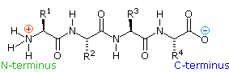
The conformational flexibility of peptide chains is limited chiefly to rotations about the bonds leading to the alpha-carbon atoms. This restriction is due to the rigid nature of the amide (peptide) bond. As shown in the following diagram, nitrogen electron pair delocalization into the carbonyl group results in significant double bond character between the carbonyl carbon and the nitrogen. This keeps the peptide links relatively planar and resistant to conformational change. The color shaded rectangles in the lower structure define these regions, and identify the relatively facile rotations that may take place where the corners meet (i.e. at the alpha-carbon). This aspect of peptide structure is an important factor influencing the conformations adopted by proteins and large peptides.
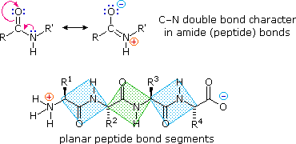
Because the N-terminus of a peptide chain is distinct from the C-terminus, a small peptide composed of different aminoacids may have a several constitutional isomers.
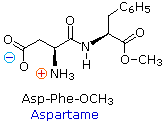
Natural peptides of varying complexity are abundant. The simple and widely distributed tripeptide glutathione (first entry in the following table), is interesting because the side-chain carboxyl function of the N-terminal glutamic acid is used for the peptide bond. An N-terminal glutamic acid may also close to a lactam ring, as in the case of TRH (second entry). The abbreviation for this transformed unit is pGlu (or pE), where p stands for "pyro" (such ring closures often occur on heating). The larger peptides in the table also demonstrate the importance of amino acid abbreviations, since a full structural formula for a nonapeptide (or larger) would prove to be complex and unwieldy. The formulas using single letter abbreviations are colored red. The ten peptides listed in this table make use of all twenty common amino acids. Note that the C-terminal unit has the form of an amide in some cases (e.g. TRH, angiotensin & oxytocin). When two or more cysteines are present in a peptide chain, they are often joined by disulfide bonds (e.g. oxytocin & endothelin); and in the case of insulin, two separate peptide chains (A & B) are held together by such links.
Name (residues)
Source or Function
Amino Acid Sequence
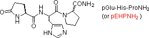
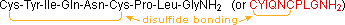
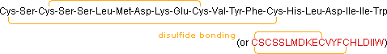
The different amino acids that make up a peptide or protein, and the order in which they are joined together by peptide bonds is referred to as the primary structure. From the examples shown above, it should be evident that it is not a trivial task to determine the primary structure of such compounds, even modestly sized ones. Complete hydrolysis of a protein or peptide, followed by amino acid analysis establishes its gross composition, but does not provide any bonding sequence information.
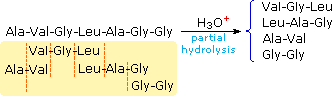
Partial hydrolysis will produce a mixture of shorter peptides and some amino acids. If the primary structures of these fragments are known, it is sometimes possible to deduce part or all of the original structure by taking advantage of overlapping pieces. For example, if a heptapeptide was composed of three glycines, two alanines, a leucine and a valine, many possible primary structures could be written. On the other hand, if partial hydrolysis gave two known tripeptide and two known dipeptide fragments, as shown on the right, simple analysis of the overlapping units identifies the original primary structure. Of course, this kind of structure determination is very inefficient and unreliable. First, we need to know the structures of all the overlapping fragments. Second, larger peptides would give complex mixtures which would have to be separated and painstakingly examined to find suitable pieces for overlapping. It should be noted, however, that modern mass spectrometry uses this overlap technique effectively. The difference is that bond cleavage is not achieved by hydrolysis, and computers assume the time consuming task of comparing a multitude of fragments.
Over the years that chemists have been studying these important natural products, many techniques have been used to investigate their primary structure or amino acid sequence. Indeed, commercial instruments that automatically sequence peptides and proteins are now available. A few of the most important and commonly used techniques will be described here. Identification of the N-terminal and C-terminal aminoacid units of a peptide chain provides helpful information. N-terminal analysis is accomplished by the Edman Degradation, which is outlined in the following diagram. A free amine function, usually in equilibrium with zwitterion species, is necessary for the initial bonding to the phenyl isothiocyanate reagent. The products of the Edman degradation are a thiohydantoin heterocycle incorporating the N-terminal amino acid together with a shortened peptide chain. Amine functions on a side-chain, as in lysine, may react with the isothiocyanate reagent, but do not give thiohydantoin products.
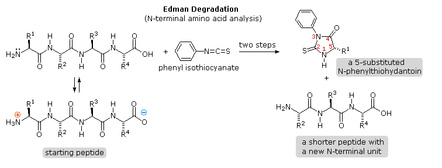
Repeated clicking of the "Next Diagram" button displays the mechanism of this important analytical method. A major advantage of the Edman procedure is that the remaining peptide chain is not further degraded by the reaction. This means that the N-terminal analysis may be repeated several times, thus providing the sequence of the first three to five amino acids in the chain. A disadvantage of the procedure is that is peptides larger than 30 to 40 units do not give reliable results.
Chemical Analysis Complementary C-terminal analysis of peptide chains may be accomplished chemically or enzymatically. The chemical analysis is slightly more complex than the Edman procedure. First, side-chain carboxyl groups and hydroxyl groups must be protected as amides or esters. Next, the C-terminal carboxyl group is activated as an anhydride and reacted with thiocyanate. The resulting acyl thiocyanate immediately cyclizes to a hydantoin ring, and this can be cleaved from the peptide chain in several ways, not described here. Depending on the nature of this final cleavage, the procedure can be modified to give a C-terminal acyl thiocyanate peptide product which automatically rearranges to a thiohydantoin incorporating the penultimate C-terminal unit. Thus, repetitive analyses may be conducted in much the same way they are with the Edman procedure.
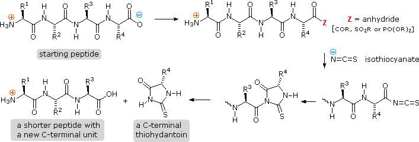
Enzymatic Analysis Enzymatic C-terminal amino acid cleavage by one of several carboxypeptidase enzymes is a fast and convenient method of analysis. Because the shortened peptide product is also subject to enzymatic cleavage, care must be taken to control the conditions of reaction so that the products of successive cleavages are properly monitored. The following example illustrates this feature. A peptide having a C-terminal sequence: ~Gly-Ser-Leu is subjected to carboxypeptidase cleavage, and the free aminoacids cleaved in this reaction are analyzed at increasing time intervals. By clicking on the diagram, the results of this experiment will be displayed. The leucine is cleaved first, the serine second, and the glycine third, as demonstrated by the sequential analysis. Of course, fourth and fifth units will also be released as time passes, but these products are not shown.
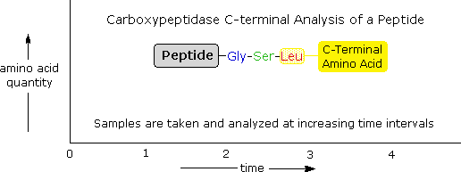
Name
Type
Specificity
Mechanisms for the enzymatic reactions are not as easily formulated. Other enzymatic cleavages have been developed, but the two listed here will serve to illustrate their application.
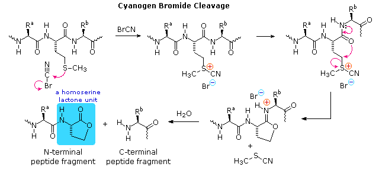
To see how these procedures can be combined to elucidate the primary structure of a peptide, consider the melanocyte stimulating hormone isolated from pigs. This octadecapeptide (18 amino acid units) has the composition: Arg,Asp2,Glu2,Gly2,His,Lys2,Met,Phe,Pro3,Ser,Tyr2, and is abbreviated P18. The following diagram, which begins with the results of terminal unit analysis, illustrates the logical steps that could be used to solve the structural problem. By clicking the "Next Stage" button the results and conclusions from each step will be displayed. Comments about each stage are presented under the diagram.
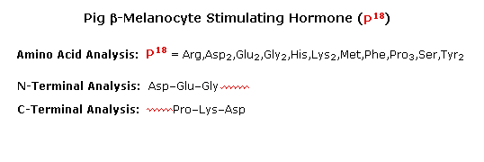
a) Cyanogen bromide cleavage gives two peptide fragments, the longer of which has all the units on the C-terminal side of methionine. b) N-terminal analysis of the undecapeptide fragment, P11, locates the three amino acids to the right of methionine. c) Trypsin cleavage of P11 shows the location of the single arginine, which is found as the C-terminal unit of the tetrapeptide fragment. One of the two lysines was known to be next to the C-terminus. The other must be part of the smaller peptide from the cyanogen bromide reaction. d) With only four amino acids remaining to be located, the position of the second tyrosine may be pursued by chymotrypsin cleavage of P18 itself. Four fragments are obtained, and the final structure might have been solved by these alone. However, selective terminal group analysis of the two pentapeptides serves to locate the tyrosine and a second proline next to the left most glycine, as well as identifying the units on each side of the methionine. The one remaining amino acid, a proline, is then placed at the last vacant site (yellow box).
If the carboxyl function at the C-terminus of a peptide forms a peptide bond with the N-terminal amine group a cyclic peptide is formed. Carboxyate and amine functions on side chains may also combine to form rings. Cyclic peptides are most commonly found in microorganisms, and often incorporate some D-amino acids as well as unusual amino acids such as ornithine (Orn). The decapeptide antibiotic gramacidin S, produced by a strain of Bacillus brevis, is one example of this interesting class of natural products. The structure of gramicidin S is shown in the following diagram. The atypical amino acids are colored. When using a shorthand notation for cyclic structures, the top line is written by the usual convention (N-group on the left), but vertical and lower lines must be adjusted to fit the bonding. Arrows on these bonds point in the CO-N direction of each peptide bond.
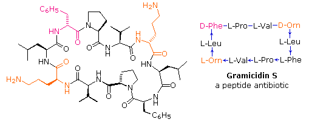
To see a model of another cyclic peptide, having potentially useful medicinal properties Click Here.
The compounds we call proteins exhibit a broad range of physical and biological properties. Two general categories of simple proteins are commonly recognized.
The various properties of peptides and proteins depend not only on their component amino acids and their bonding sequence in peptide chains, but also on the way in which the peptide chains are stretched, coiled and folded in space. Because of their size, the orientational options open to these macromolecules might seem nearly infinite. Fortunately, several factors act to narrow the structural options, and it is possible to identify some common structural themes or secondary structures that appear repeatedly in different molecules. These conformational segments are sometimes described by the dihedral angles Φ & Ψ, defined in the diagram on the right below. Most proteins and large peptides do not adopt completely uniform conformations, and full descriptions of their preferred three dimensional arrangements are defined as tertiary structures.
Five factors that influence the conformational equilibria of peptide chains are: • The planarity of peptide bonds. Conformations are defined by dihedral angles Φ & Ψ. • Hydrogen bonding of amide carbonyl groups to N-H donors. • Steric crowding of neighboring groups. • Repulsion and attraction of charged groups. • The hydrophilic and hydrophobic character of substituent groups.
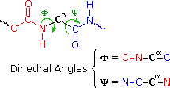
A. Helical Coiling The relatively simple undecapeptide shown in the following diagram can adopt a zig-zag linear conformation, as drawn. A ball & stick model of this peptide will be displayed by clicking the appropriate button. However, this molecule prefers to assume a coiled helical conformation, displayed by clicking any of the three buttons on the right. The middle button shows a stick model of this helix, with the backbone chain drawn as a heavy black line and the hydrogen bonds as dashed maroon lines. The other buttons display a ball & stick model and a ribbon that defines this α-helix. Seven hydrogen bonds, that together provide roughly 30 kcal/mol stability, help to maintain this conformation.
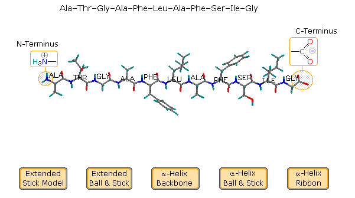
Examine the drawing activated by the middle button. The N-terminal residue (Ala) is on the left, and the C-terminal Gly on the right. The alpha-helix is right-handed, which means that it rotates clockwise as it spirals away from a viewer at either end. Other structural features that define an alpha-helix are: the relative locations of the donor and acceptor atoms of the hydrogen bond, the number of amino acid units per helical turn and the distance the turn occupies along the helical axis. The first hydrogen bond (from the N-terminal end) is from the carbonyl group of the alanine to the N-H group of the phenylalanine. Three amino acids, Thr, Gly & Ala, fall entirely within this turn. Parts of the N-terminal alanine acceptor and the phenylalanine donor also fall within this helical turn, and careful analysis of the structure indicates there are 3.6 amino acid units per turn. The distance covered by the turn is 5.4 Å. Using the dihedral angle terminology noted above, a perfect α-helix has Φ = -58º and Ψ = -47º. In natural proteins the values associated with α-helical conformations range from -57 to -70º for Φ, and from -35 to -48º for Ψ. To examine a model of this alpha-helix, click on the green circle. Once this display is activated, the important hormone insulin may be shown by clicking the appropriate button in the blue-shaded rows. Helical conformations of peptide chains may also be described by a two number term, nm, where n is the number of amino acid units per turn and m is the number of atoms in the smallest ring defined by the hydrogen bond. Using this terminology, the alpha-helix is a 3.613 helix. Other common helical conformations are 310 and 4.416. The alpha helix is the most stable of these, accounting for a third of the secondary structure found in most globular (non-fibrous) proteins.
B. β-Pleated Sheets The linear zig-zag conformation of a peptide chain may be stabilized by hydrogen bonding to adjacent parallel chains of the same kind. Bulky side-chain substituents destabilize this arrangement due to steric crowding, so this beta-sheet conformation is usually limited to peptides having a large amount of glycine and alanine. Steric interactions also cause a slight bending or contraction of the peptide chains, and this results in a puckered distortion (the pleated sheet). As shown in the following diagram, the adjacent chains may be oriented in opposite N to C directions, termed antiparallel. Using the dihedral angle terminology, an antiparallel β-sheet has Φ = -139º and a Ψ = 135º. Alternatively, the adjacent peptide chains may be oriented in the same direction, termed parallel. By convention, beta-sheets are designated by broad arrows or cartoons, pointing in the direction of the C-terminus. In this diagram, these cartoons (colored violet) are displayed by clicking on the appropriate button. A model of a two-antiparallel-chain structure may be examined by clicking on the green circle.
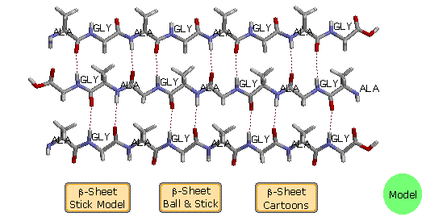
Some proteins have layered stacks of β-sheets, which impart structural integrity and may open to form a cavity (a beta barrel). An example is human retinol binding protein, which has a cavity formed by eight β-sheet strands. A model of this interesting protein may be displayed by clicking the upper button in the blue-shaded rows. When beta-sheets are observed as secondary structural components of globular proteins, they are twisted by about 5 to 25º per residue; consequently, the planes of the sheets are not parallel. The twist is always of the same handedness, and is usually greater for antiparallel sheets. Examples will be found in the following structures.
C. Other Structures Although most proteins and large peptides may have alpha-helix and beta-sheet segments, their tertiary structures may consist of less highly organized turns, strands and coils. Turns reverse the direction of the peptide chain, and are considered to be a third common secondary structure motif. Approximately a third of all the residues in globular proteins are found in turns. Turns occur chiefly on the protein surface, often incorporate polar and charged residues, and have been classified in three sub-groups. As noted earlier, several factors perturb the organization of peptide chains. One that has not yet been cited is the structural influence of proline. Unlike the other common amino acids, rotation about the α C-N bond in proline is not possible due to the structural constraint of the five-membered ring. Consequently, the presence of a proline in a peptide chain introduces a bend or kink that disrupts helices or sheets. Also, prolines that are part of a peptide chain have no N-H hydrogen bonding donors to contribute to conformer stabilization. With the exception of silk fibroin and certain synthetically engineered peptides, significant portions of most proteins adopt conformations that resist simple description or categorization. For example, the following diagram shows the tertiary structure of a polypeptide neurotoxin found in cobra venom. A large section of antiparallel beta-sheets is colored violet, and a short alpha-helix is green. The remaining peptide chain seems disorganized, but certain features such as a 180º turn (called a beta-turn) and five disulfide bonds can be identified. A Chime model of this compound may be examined by clicking on the diagram.
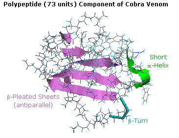
A full description and discussion of protein structure is beyond the scope of this text, but a few additional examples will be instructive. In addition to the tertiary structures that will be displayed, attention must also be given to the way in which peptide structures may aggregate to form dimeric, trimeric and tetrameric clusters. These assemblies, known as quaternary structures, have characteristic properties different from their monomeric components. The examples of mellitin, collagen and hemoglobin, shown below demonstrate this feature. Some proteins incorporate nonpeptide molecules in their overall structure, either bonded covalently or positioned by other forces. These are called conjugated proteins, and the non-peptide components are referred to as prosthetic groups. Examples of conjugated proteins include:
Glycoproteins, incorporating polysaccharide prosthetic groups (e.g. collagen and mucus). Lipoproteins, incorporating lipid prosthetic groups (e.g. HDL and LDL). Chromoproteins, incorporating colored prosthetic groups (e.g. hemoglobin).
The seven illustrations shown below identify a set of peptides and proteins that may be examined as Jmol models by clicking on a selected picture.
Endothelin & Angiogenin are small peptides that have important and selective physiological properties. Lysozyme a typical globular protein, incorporating many identifiable secondary structures. Mellitin, from honey bee venom, has a well-defined quaternary structure, half of which is shown here. Collagen is a widely distributed fibrous protein with a large and complex quaternary structure. Only a small model segment is shown here. Thioredoxin is a relatively small regulatory protein serving an important redox function. Hemoglobin, the most complex of these examples, is a large conjugated protein that transports oxygen. A 170 pound human has about a kilogram of hemoglobin distributed among some five billion red blood cells. A liter of arterial blood at body temperature can transport over 200 mL of oxygen, whereas the same fluid stripped of its hemoglobin will carry only 2 to 3 mL. The supramolecular assembly of four subunits exemplifies a quaternary structure.
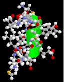
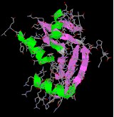
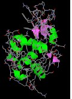
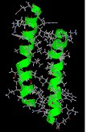
endothelin
angiogenin
lysozyme
mellitin
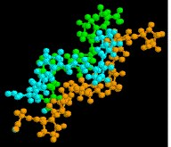
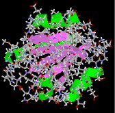
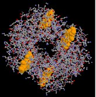
collagen
thioredoxin
hemoglobin
Many proteins are actually assemblies of several polypeptides, which in the context of the larger aggregate are known as protein subunits. Such multiple-subunit proteins possess a quaternary structure, in addition to the tertiary structure of the subunits. The subunits of a quaternary structure are held together by the same forces that are responsible for tertiary structure stabilization. These include hydrophobic attraction of nonpolar side chains in contact regions of the subunits, electrostatic interactions between ionic groups of opposite charge: hydrogen bonds between polar groups; and disulfide bonds. Examples of proteins having a quaternary (or quartary) structure include hemoglobin, HIV-1 protease and the insulin hexamer.
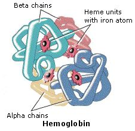 The hemoglobin molecule is an assembly of four protein subunits, two alpha units and two beta units. Each protein chain folds into a set of alpha-helix structural segments connected together in a globin arrangement, so called because this arrangement is the same folding motif used in other heme/globin proteins such as myoglobin. This folding pattern contains a pocket which strongly binds the heme group. The four polypeptide chains are bound to each other by salt bridges, forming a tetrameric quaternary structure. A model of hemoglobin was shown above, and may also be examined by clicking the image on the left. In animals, hemoglobin transports oxygen from the lungs or gills to the rest of the body, where it releases the oxygen for cell use. Hemoglobin's oxygen-binding capacity is decreased in the presence of carbon monoxide because both gases compete for the same binding sites on hemoglobin. The binding affinity of hemoglobin for CO is 200 times greater than its affinity for oxygen. When hemoglobin combines with CO, it forms a very bright red compound called carboxyhemoglobin, which may cause the skin of CO poisoning victims to appear pink in death. In heavy smokers, up to 20% of the oxygen-active sites can be blocked by CO. Similarly, hemoglobin has a competitive binding affinity for cyanide, sulfur monoxide, nitrogen dioxide and sulfides including hydrogen sulfide . All of these bind to the heme iron without changing its oxidation state, causing grave toxicity.

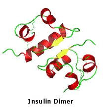
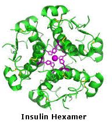
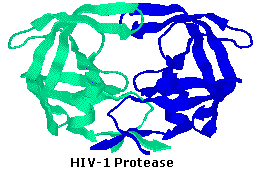
If animation is not occurring, click on the drawing or reload.
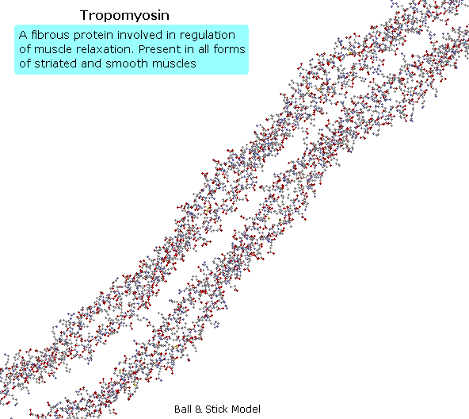
In order to synthesize a peptide from its component amino acids, two obstacles must be overcome. The first of these is statistical in nature, and is illustrated by considering the dipeptide Ala-Gly as a proposed target. If we ignore the chemistry involved, a mixture of equal molar amounts of alanine and glycine would generate four different dipeptides. These are: Ala-Ala, Gly-Gly, Ala-Gly & Gly-Ala. In the case of tripeptides, the number of possible products from these two amino acids rises to eight. Clearly, some kind of selectivity must be exercised if complex mixtures are to be avoided. The second difficulty arises from the fact that carboxylic acids and 1º or 2º-amines do not form amide bonds on mixing, but will generally react by proton transfer to give salts (the intermolecular equivalent of zwitterion formation).
From the perspective of an organic chemist, peptide synthesis requires selective acylation of a free amine. To accomplish the desired amide bond formation, we must first deactivate all extraneous amine functions so they do not compete for the acylation reagent. Then we must selectively activate the designated carboxyl function so that it will acylate the one remaining free amine. Fortunately, chemical reactions that permit us to accomplish these selections are well known. First, the basicity and nucleophilicity of amines are substantially reduced by amide formation. Consequently, the acylation of amino acids by treatment with acyl chlorides or anhydrides at pH > 10, as described earlier, serves to protect their amino groups from further reaction. Second, acyl halide or anhydride-like activation of a specific carboxyl reactant must occur as a prelude to peptide (amide) bond formation. This is possible, provided competing reactions involving other carboxyl functions that might be present are precluded by preliminary ester formation. Remember, esters are weaker acylating reagents than either anhydrides or acyl halides, as noted earlier. Finally, dicyclohexylcarbodiimide (DCC) effects the dehydration of a carboxylic acid and amine mixture to the corresponding amide under relatively mild conditions. The structure of this reagent and the mechanism of its action have been described. Its application to peptide synthesis will become apparent in the following discussion.
The strategy for peptide synthesis, as outlined here, should now be apparent. The following example shows a selective synthesis of the dipeptide Ala-Gly.
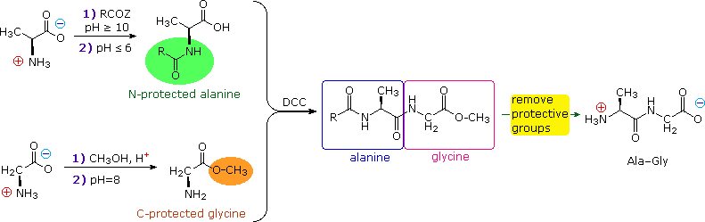
An important issue remains to be addressed. Since the N-protective group is an amide, removal of this function might require conditions that would also cleave the just formed peptide bond. Furthermore, the harsh conditions often required for amide hydrolysis might cause extensive racemization of the amino acids in the resulting peptide. This problem strikes at the heart of our strategy, so it is important to give careful thought to the design of specific N-protective groups. In particular, three qualities are desired:
1) The protective amide should be easy to attach to amino acids. 2) The protected amino group should not react under peptide forming conditions. 3) The protective amide group should be easy to remove under mild conditions.
A number of protective groups that satisfy these conditions have been devised; and two of the most widely used, carbobenzoxy (Cbz) and t-butoxycarbonyl (BOC or t-BOC), are described here.
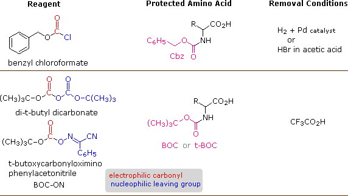
The reagents for introducing these N-protective groups are the acyl chlorides or anhydrides shown in the left portion of the above diagram. Reaction with a free amine function of an amino acid occurs rapidly to give the "protected" amino acid derivative shown in the center. This can then be used to form a peptide (amide) bond to a second amino acid. Once the desired peptide bond is created the protective group can be removed under relatively mild non-hydrolytic conditions. Equations showing the protective group removal will be displayed above by clicking on the diagram. Cleavage of the reactive benzyl or tert-butyl groups generates a common carbamic acid intermediate (HOCO-NHR) which spontaneously loses carbon dioxide, giving the corresponding amine. If the methyl ester at the C-terminus is left in place, this sequence of reactions may be repeated, using a different N-protected amino acid as the acylating reagent. Removal of the protective groups would then yield a specific tripeptide, determined by the nature of the reactants and order of the reactions.
The synthesis of a peptide of significant length (e.g. ten residues) by this approach requires many steps, and the product must be carefully purified after each step to prevent unwanted cross-reactions. To facilitate the tedious and time consuming purifications, and reduce the material losses that occur in handling, a clever modification of this strategy has been developed. This procedure, known as the Merrifield Synthesis after its inventor R. Bruce Merrifield, involves attaching the C-terminus of the peptide chain to a polymeric solid, usually having the form of very small beads. Separation and purification is simply accomplished by filtering and washing the beads with appropriate solvents. The reagents for the next peptide bond addition are then added, and the purification steps repeated. The entire process can be automated, and peptide synthesis machines based on the Merrifield approach are commercially available. A series of equations illustrating the Merrifield synthesis may be viewed by clicking on the following diagram. The final step, in which the completed peptide is released from the polymer support, is a simple benzyl ester cleavage. This is not shown in the display.
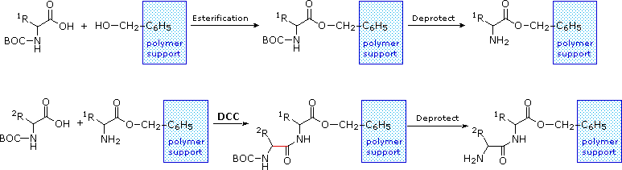
Two or more moderately sized peptides can be joined together by selective peptide bond formation, provided side-chain functions are protected and do not interfere. In this manner good sized peptides and small proteins may be synthesized in the laboratory. However, even if chemists assemble the primary structure of a natural protein in this or any other fashion, it may not immediately adopt its native secondary, tertiary and quaternary structure. Many factors, such as pH, temperature and inorganic ion concentration influence the conformational coiling of peptide chains. Indeed, scientists are still trying to understand how and why these higher structures are established in living organisms.
The natural or native structures of proteins may be altered, and their biological activity changed or destroyed by treatment that does not disrupt the primary structure. This denaturation is often done deliberately in the course of separating and purifying proteins. For example, many soluble globular proteins precipitate if the pH of the solution is set at the pI of the protein. Also, addition of trichloroacetic acid or the bis-amide urea (NH2CONH2) is commonly used to effect protein precipitation. Following denaturation, some proteins will return to their native structures under proper conditions; but extreme conditions, such as strong heating, usually cause irreversible change. Some treatments known to denature proteins are listed in the following table.
Heat
Ultraviolet Radiation
Strong Acids or Bases
Urea Solution
Some Organic Solvents(e.g. ethanol & acetone)
Agitation
Not all proteins are easily denatured. As noted above, fibrous proteins such as keratins, collagens and elastins are robust, relatively insoluble, quaternary structured proteins that play important roles in the physical structure of organisms. Secondary structures such as the α-helix and β-sheet take on a dominant role in the architecture and aggregation of keratins. In addition to the intra- and intermolecular hydrogen bonds of these structures, keratins have large amounts of the sulfur-containing amino acid Cys, resulting in disulfide bridges that confer additional strength and rigidity. The more flexible and elastic keratins of hair have fewer interchain disulfide bridges than the keratins in mammalian fingernails, hooves and claws. Keratins have a high proportion of the smallest amino acid, Gly, as well as the next smallest, Ala. In the case of β-sheets, Gly allows sterically-unhindered hydrogen bonding between the amino and carboxyl groups of peptide bonds on adjacent protein chains, facilitating their close alignment and strong binding. Fibrous keratin chains then twist around each other to form helical filaments. Elastin, the connective tissue protein, also has a high percentage of both glycine and alanine. An insoluble rubber-like protein, elastin confers elasticity on tissues and organs. Elastin is a macromolecular polymer formed from tropoelastin, its soluble precursor. The secondary structure is roughly 30% β-sheets, 20% α-helices and 50% unordered. The elastic properties of natural elastin are attributed to polypentapeptide sequences (Val-Pro-Gly-Val-Gly) in a cross-linked network of randomly coiled chains. Water is believed to act as a "plasticizer", assisting elasticity. Collagen is a major component of the extracellular matrix that supports most tissues and gives cells structure. It has great tensile strength, and is the main component of fascia, cartilage, ligaments, tendons, bone and skin. Collagen contains more Gly (33%) and proline derivatives (20 to 24%) than do other proteins, but very little Cys. The primary structure of collagen has a frequent repetitive pattern, Gly-Pro-X (where X is a hydroxyl bearing Pro or Lys). This kind of regular repetition and high glycine content is found in only a few other fibrous proteins, such as silk fibroin (75-80% Gly and Ala + 10% Ser). Collagen chains are approximately 1000 units long, and assume an extended left-handed helical conformation due to the influence of proline rings. Three such chains are wound about each other with a right-handed twist forming a rope-like superhelical quaternary structure, stabilized by interchain hydrogen bonding.
Globular proteins are more soluble in aqueous solutions, and are generally more sensitive to temperature and pH change than are their fibrous counterparts; furthermore, they do not have the high glycine content or the repetitious sequences of the fibrous proteins. Globular proteins incorporate a variety of amino acids, many with large side chains and reactive functional groups. The interactions of these substituents, both polar and nonpolar, often causes the protein to fold into spherical conformations which gives this class its name. In contrast to the structural function played by the fibrous proteins, the globular proteins are chemically reactive, serving as enzymes (catalysts), transport agents and regulatory messengers. 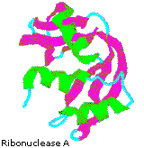 Although globular proteins are generally sensitive to denaturation (structural unfolding), some can be remarkably stable. One example is the small enzyme ribonuclease A, which serves to digest RNA in our food by cleaving the ribose phosphate bond. Ribonuclease A is remarkably stable. One procedure for purifying it involves treatment with a hot sulfuric acid solution, which denatures and partially decomposes most proteins other than ribonuclease A. This stability reflects the fact that this enzyme functions in the inhospitable environment of the digestive tract. Ribonuclease A was the first enzyme synthesized by R. Bruce Merrifield, demonstrating that biological molecules are simply chemical entities that may be constructed artificially. By clicking the cartoon image on the left, an interactive model of ribonuclease A will be displayed.

This page is the property of The Edvibe Team. Comments, questions and errors should be sent to contact@edvibe.co.ke. These pages are provided to the IOCD to assist in capacity building in chemical education. 05/05/2013